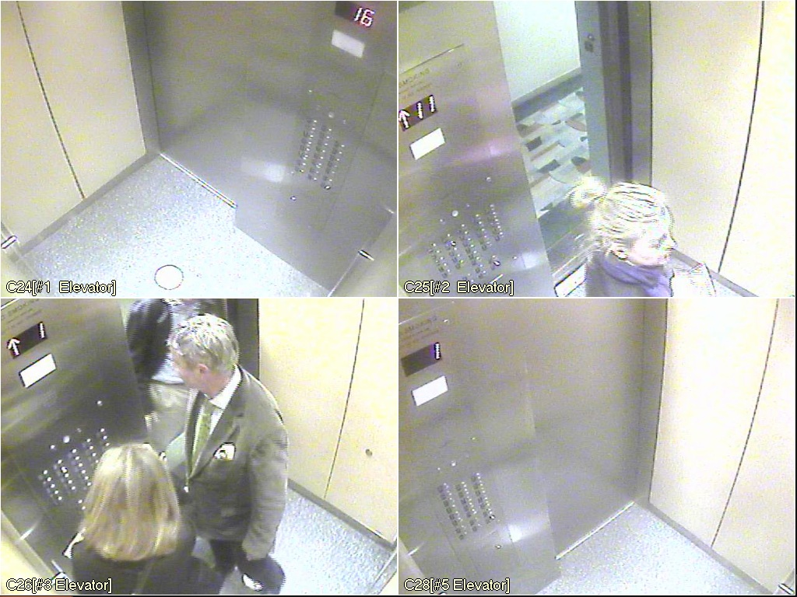

Transpiration was an interactive projection installed in the courtyard of the landmark building at 240 Central Park South in New York City.
Twenty-seven branches on the tree represent the twenty-seven stories of the building. Four lines moving along the trunk track the movement of the four elevators up and down the building in real time. The branches of the tree grow and shrink in response to the residents getting on and off floors in the building.
Computer vision was used to track activity in the elevators via a live security camera feed. By tracking movement and reading the digits of the display we could estimate activity on each floor of the building.

Transpiration was a collaboration with Jack Kalish, Gabriella Levine, and Emily Webster.
I really enjoyed this collaboration because we each organically took different responsibilities—computer vision, the tree visualization, installing projectors, coordinating with building management—yet the piece came together naturally.
In retrospect, I feel like my contribution—tracking the elevators—was inspired by playing SimTower as a kid. The movement of elevators tells a lot about the activity of a building.
Thanks to Rob Faludi for teaching the Sensitive Buildings class at ITP, to building owner Jim Korein for letting us try out the piece and then commissioning it as a permanent installation, and to building manager Peter Julinszki for patiently allowing us to patch in to the security camera system.
Transpiration was decomissioned in winter 2012 when the neighboring building we were projecting on was demolished.